Tosa, Kochi: things to do, food and stays
Tosa · Kochi
Tosa
Highlighted on the Kochi map.
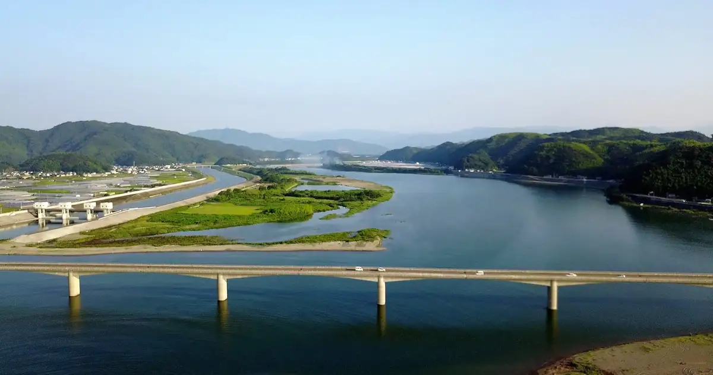
Stay
ヴィラ サントリーニ
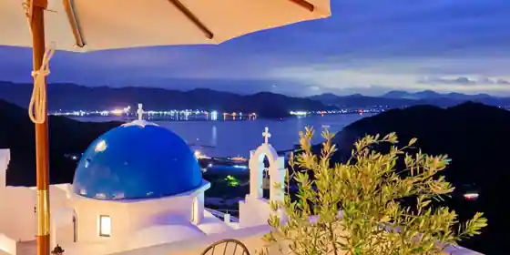
Villa Santorini
キャンピングトレーラーロッジ Ｂ＆Ｍ
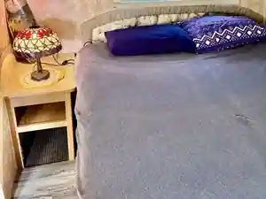
Kyanpingutorera Lodge B&M
Mountain lodge in Shinkyo, Tosa with family-friendly stays.
土佐龍温泉 三陽荘
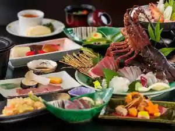
Tosa Ryu Onsen Sanyo So
Inn at Tosaryu Onsen in Usa, Tosa.
Dining
logue
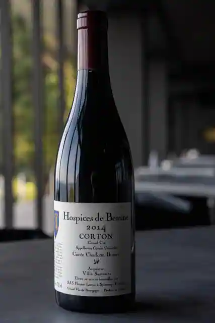
logue
ホテル ヴィラサントリーニ
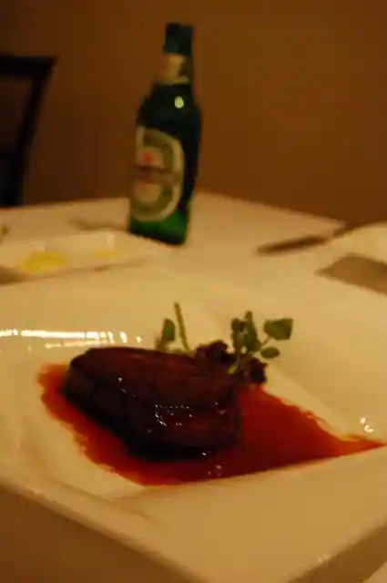
Hotel Villa Santorini
萩の茶屋
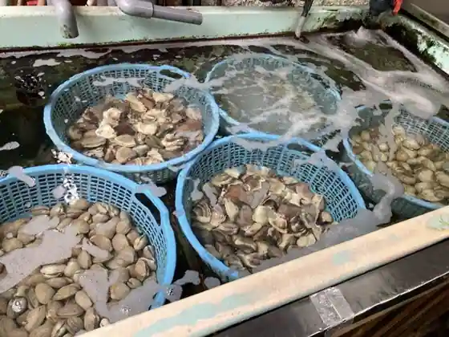
Hagi No Chaya
貝鮮浜焼きバイキング あみ浜食堂
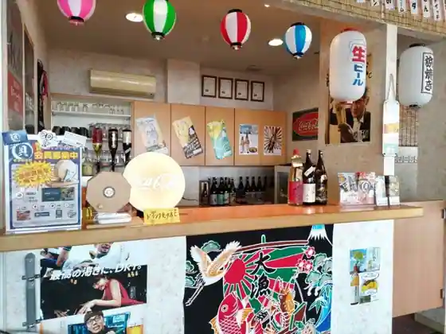
Kai Sen Hamayaki Ki Baikingu Ami Hama Shokudo
宇佐もんや
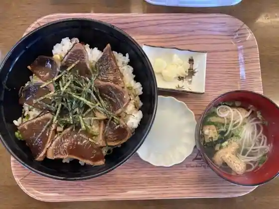
Usa Monya
ベーカリーカフェ イワゴー
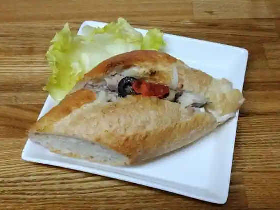
Bakery Cafe Iwago
ティラ
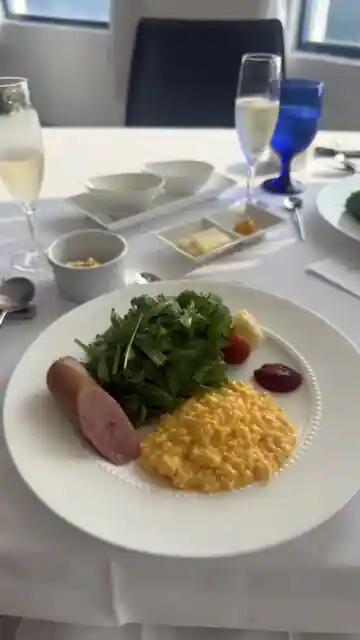
Teira
黒潮うどん
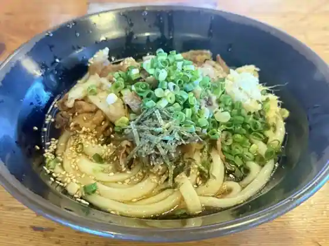
Kuroshio Udon
三陽荘
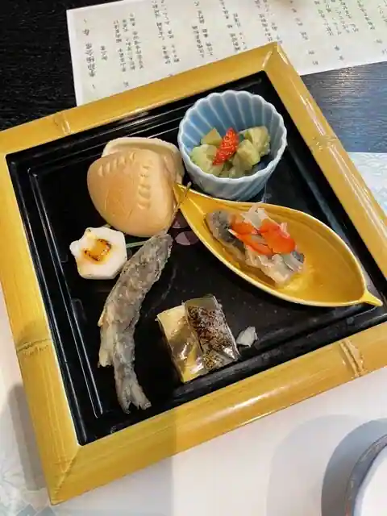
Sanyo So
さぬきうどん 清瀧
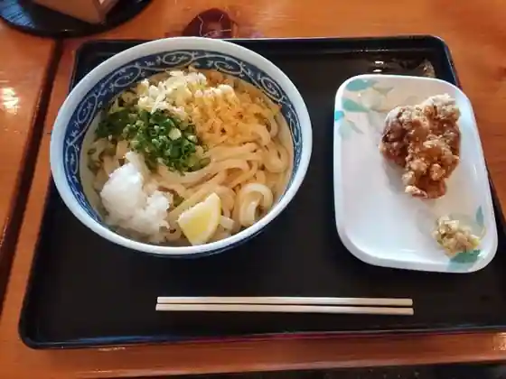
Sanukiudon Kiyotaki
新漁丸
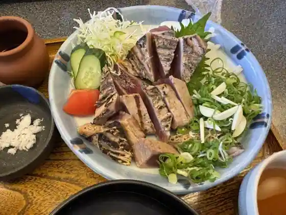
Shin Ryo Maru
稲月
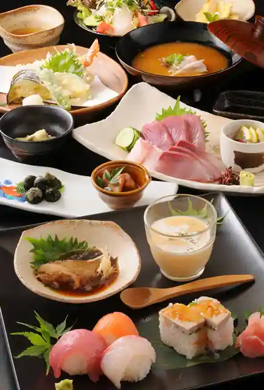
Ine Gatsu
風来屋
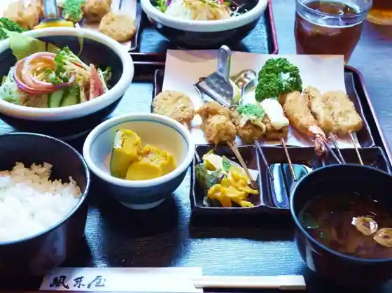
Furai Ya
中乃家
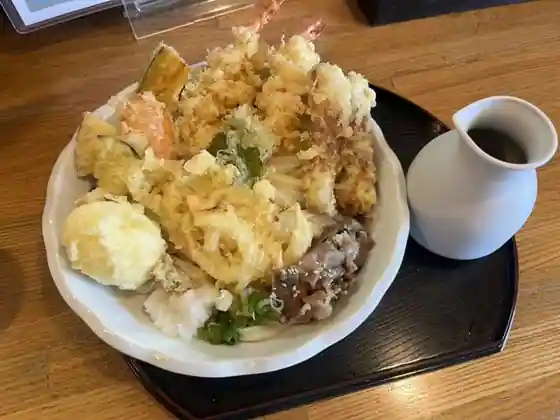
Naka No Ie
千崎製麺
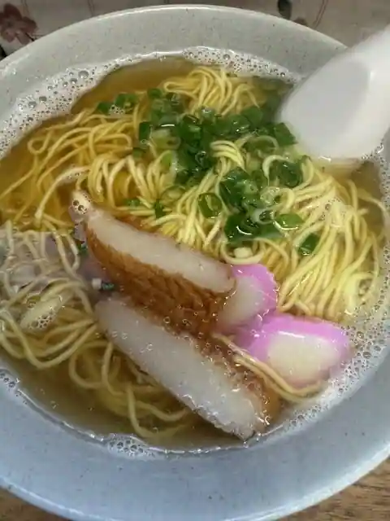
Senzaki Seimen
民家おにわ
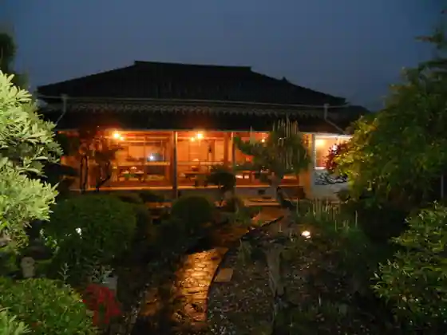
Minka Oniwa
お食事処 帆竿
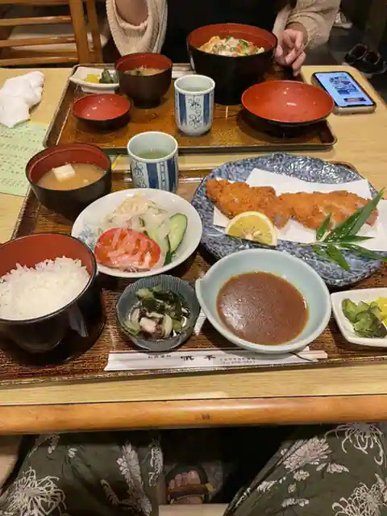
O Shokuji Tokoro Ho Sao
前田製菓
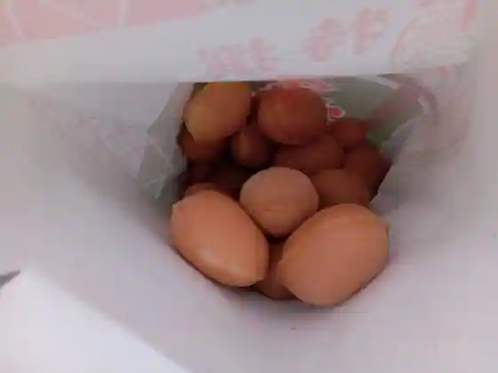
Maeda Seika
海鮮BBQ 土佐のかき小屋
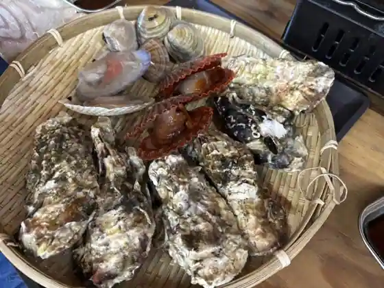
Kaisen BBQ Tosa Nokaki Koya
コリーヌ洋菓子店 南本町店
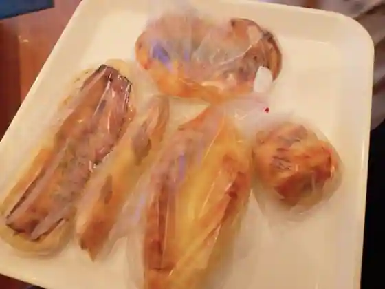
Korinu Yogashi Minamimoto Machi
お好み焼彦兵衛
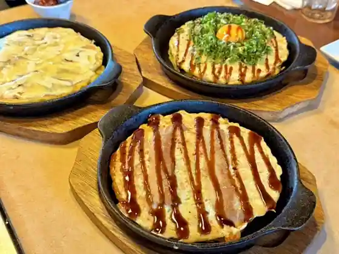
O Konomi Yaki Hikobe
そばマルシェ
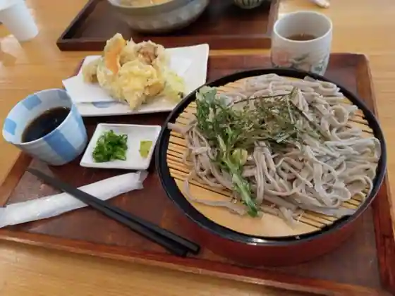
Soba Marushie
Sights
Niyodogawa Kako Bridge
Kiyotaki Tera
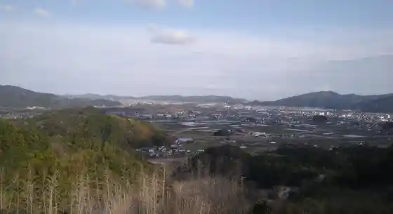
Seiryu Tera
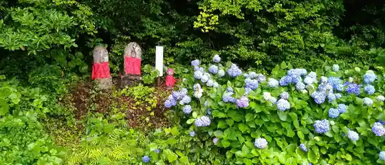
Usa Fishing Port
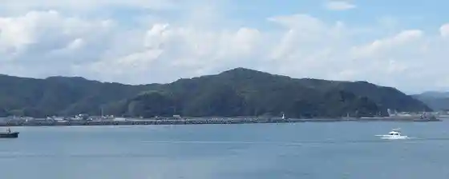
Kanigaike
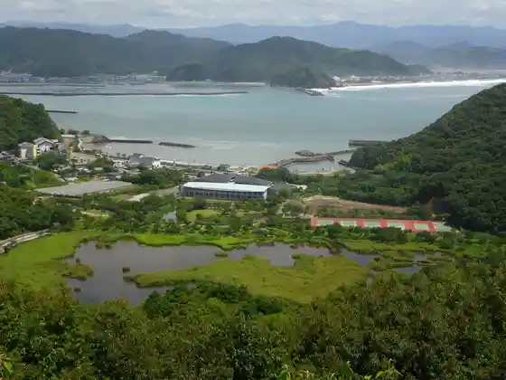
Shinkyo Green Park